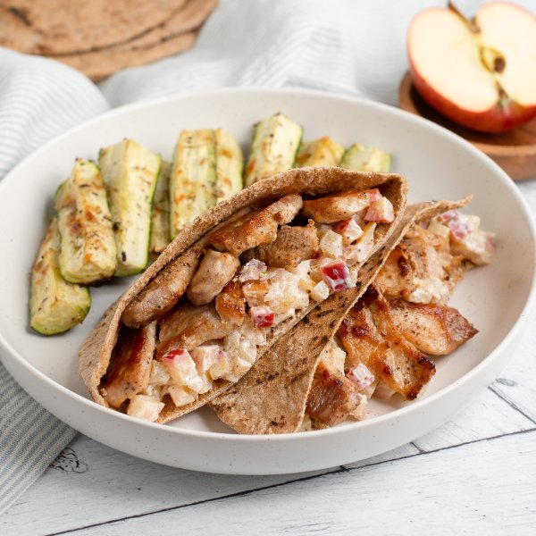

Pork-Stuffed Pita with Creamy Apple Chutney & Parmesan Zucchini Spears

Total Time
40 min
Nutrition (per serving)
701.1 kcalCalories
48.3 gProtein
64.8 gCarbs
30.9 gFat
Full nutrition table
| Calories | 701.1 kcal |
| Total fat | 30.9 g |
| Saturated fat | 9.2 g |
| Trans fat | 0.2 g |
| Cholesterol | 91.9 mg |
| Sodium | 462 mg |
| Carbohydrates | 64.8 g |
| Fiber | 10.8 g |
| Sugars | 20.9 g |
| Protein | 48.3 g |
| Potassium | 1662.2 mg |
| Calcium | 126.4 mg |
| Iron | 4.6 mg |
| Vitamin A | 720.8 IU |
| Vitamin C | 58.8 mg |
| Vitamin D | 17.3 IU |
Cookware
Ingredients
- 8 fl ozchicken or vegetable broth
- 2Gala apples
- 2 clovesgarlic
- 2 (1 inch) piecesginger root
- 1 ozParmesan cheese
- ½ cupplain Greek yogurt
- 4pork chops, boneless
- 2shallots
- 4whole grain pitas
- 6 mediumzucchini squash
- apple cider vinegar
- black pepper
- brown sugar
- coriander, ground
- extra virgin olive oil
- Italian seasoning
- salt
Steps
- Preheat oven to 450°F.
- Wash and dry the fresh produce.2 (1 inch) pieces ginger root
2 Gala apples
6 medium zucchini squash - Peel and mince ginger, garlic, and shallots; transfer to a small bowl.2 cloves garlic
2 shallots - Preheat a large skillet over medium heat.
- While the skillet heats up, quarter, core, and small dice apples; add to the bowl with the ginger, garlic, and shallot.
- Once the skillet is hot, add oil and swirl to coat the bottom; add ginger, garlic, shallot, and apple. Cook, stirring occasionally, until golden and soft, 5-6 minutes. (Reserve bowl for later use.)2 tsp extra virgin olive oil
- Meanwhile, finely grate Parmesan.1 oz Parmesan cheese
- Trim zucchini and quarter lengthwise, then halve crosswise; arrange on a large baking sheet pan. Drizzle with oil, season with spices, and sprinkle with Parmesan.2 tsp extra virgin olive oil
1 tsp Italian seasoning
½ tsp salt
¼ tsp black pepper - Place baking sheet in the oven (it doesn't have to be fully heated) and roast until zucchini is fork-tender, 12-15 minutes; remove from oven.
- When the apple is soft, add broth, vinegar, sugar, and spices to the skillet; stir to combine the chutney and bring to a simmer over medium-high heat. Once simmering, reduce heat to low and cook, stirring occasionally, until thickened, about 10 minutes.8 fl oz (1 cup) chicken or vegetable broth
4 tsp apple cider vinegar
1 tsp brown sugar
½ tsp coriander, ground
½ tsp salt
¼ tsp black pepper - When the chutney is done, transfer to the reserved bowl and set aside. Wipe the skillet clean with paper towels and return to medium-high heat.
- While the skillet heats up, pat pork chops dry with paper towels and place on a cutting board; thinly slice crosswise into bite-sized strips, then season with salt and pepper.4 pork chops, boneless
½ tsp salt
½ tsp black pepper - Once the skillet is hot, add oil and swirl to coat the bottom; add pork and stir-fry until browned and cooked through, 3-4 minutes. Remove from heat.2 tsp extra virgin olive oil
- Meanwhile, add yogurt to the chutney and stir to combine.½ cup plain Greek yogurt
- Using a clean cutting board, cut pitas in half and carefully open the pockets; stuff each pocket with creamy chutney and pork.4 whole grain pitas
- To serve, divide pitas and zucchini between plates. Enjoy!